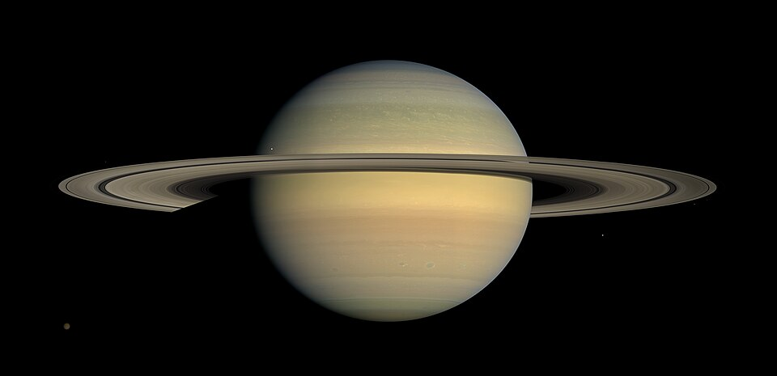

|  |
Saturno es el segundo planeta mas grande del Sistema Solar y es el sexto en orden de distancia del Sol, ubicado a 1.400 millones de kilometros del astro luminoso. Su composicion es gaseosa y es el primer planeta donde se observaron de anillos, compuestos de hielo, roca y polvo (los anillos de Jupiter y Neptuno se identificaron mas recientemente). |